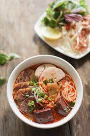

Bun Bo Hue

Description
Bun Bo Hue is a hidden Vietnamese gem that has yet to "make it" in mainstream American cuisine. It's a rich and spicy soup with deep layers of flavor. This Central Vietnamese soup is paired with tender slices of beef and pork, then topped with lots of fresh herbs.
Ingredients
Protein
- 2 lb beef shank
- 2 lb oxtail
- 2 lb pork hocks
- 1 lb Huế style pork sausage
- 1 lb block of pork blood
Broth Base & Seasoning
- Water
- 24 oz chicken broth
- 12 stalks lemongrass
- 2 yellow onions
- 3 tbsp salt
- 2 tbsp sugar
- 2 tbsp shrimp paste
- 3-4 tbsp fish sauce
- 2 tsp MSG
Aromatics & Color
- 3 tbsp anatto seeds
- 3 bsp neutral cooking oil
- 2 tbsp sliced shallot
- tbsp minced garlic
Herbs & Veggies
- Mint
- Basil
- Bean Sprouts
- Birds Eye Chile or Jalapeno
Banana Flower
- 1 banana flower
- 2 cups water
- 1 lemon juiced
Noodles
- 14 oz package dried rice noodle
Sate (Spicy Chile Condiment)
- 20 g dried Thai crushed chile
- 1/2 c neutral cooking oil
- 80 g minced shallow or white onion
- 40 g garlic minced
- 30 g lemongrass
- 2 tbsp Korean chile powder
- 1 tsp fish sauce
- 1 tbsp sugar
- 2/3 tsp salt
- 1/2 tsp MSG
Instructions
Broth:
- Clean the meat: Add all meat to a stock pot and enough water to submerge it, bring to a boil. Drain and rinse thoroughly under running water.
- Add the meat, broth, lemongrass and onions to the pot and fill with water almost to the brim. Bring to a boil then drop the heat to medium-high to maintain a low boil. Add the seasoning.
- Let it simmer and periodically check the meats for doneness and remove them as they finish cooking. The pork should be done after about an hour, the beef can vary between 2-3 hours.
- After all the meat has removed, let it cool, then slice it. Adjust seasoning and add water to the broth pot if necessary.
- Make the aromatics & coloring then add it to the pot.
- Boil noodles according to package instructions
- Assemble your bowl, and serve with herbs and veggies on a side platter
Red Coloring & Aromatics:
- Sauté seeds in oil on medium heat until the seeds give up the bright red color, then remove the seeds.
- Add shallots and garlic, sauté until brown.
- Add all of this to the pot of broth for color.
Pork Blood (Huyet / Tiet):
- The easiest thing to do is just buy it already cooked and boil just to heat it up. If you use the raw type like we did for this recipe, cut into 1″ cubes and boil for 30-45 minutes
Banana Flower:
- Prepare a bowl of about 2 cups of water, mixed with the juice of 1 lemon
- Thinly slice the banana flower and add to the water mixture to sit for about 30 minutes.
- Avoid adding little fronds (that look like mini bananas), removing them as you encounter them. They taste bitter!
Sate (Spicy Chile Condiment:
- Weigh out the dried Thai chiles, then soak in just enough warm water to cover the chiles for 20 minutes. Drain the water.
- Add all sate ingredients to a pan on medium heat and stir continuously to brown, cook, and slightly reduce the chile paste, about 30-40 minutes. If at any point it becomes too dry, you can add more oil, up to 50% of the amount we started with. Taste and reseason with sugar or salt as desired.
- Let cool and transfer to a sealed jar stored in the fridge. You can add ~2 tbsp of the final product to the soup pot for a boost in flavor and color, or simply and let each person add to their bowl to make it as spicy as they'd like!
Enjoy!